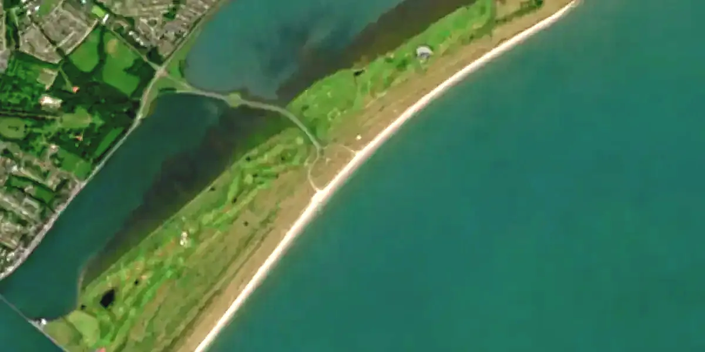
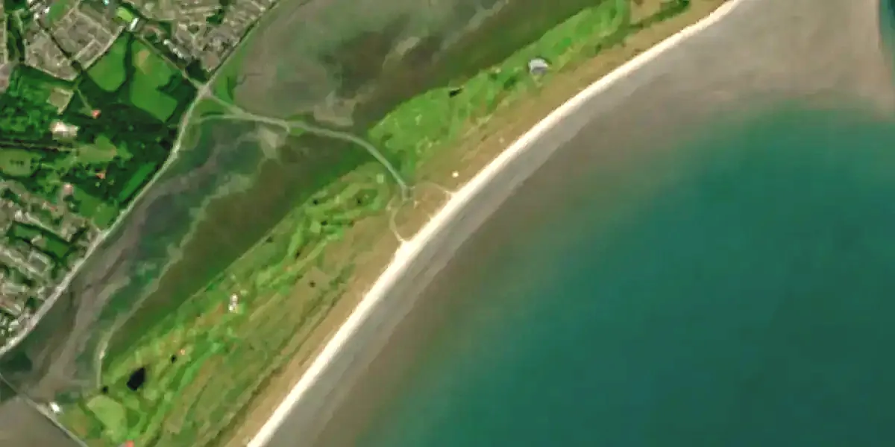

Tell me when Dollymount has 3+ stars in daylight.


↑ NFrom the sand at the end of the causeway road. Cars can drive onto the beach; park well above the high-water line.
1 m deep at the launch above 2.6 m of tide. At low water the sand runs a long way out and the foil touches.
Popular with kiters; wing on the higher half of the tide. Busy at weekends.
Model forecasts and a buoy, not a safety statement. Look at the water before you go out. Times are Irish.
Surfline's spot report has a clear order: what it's like now, the spots around it, the days at a glance, one stacked graph where every row shares the clock, then the guide. This keeps that order, in our paper-and-ink look, and aims each piece at a complaint riders make about wind and surf forecasts. No adverts, no paywall and no wetsuit or sunscreen advice: the site states figures and highlights hours, it doesn't give advice.
alerts/ work can hang off this.data/locations/guides/<id>.md), drafted from the sources already gathered in docs/IRISH_SPOTS_SOURCES.md and the satellite pictures, checked by the owner, then kept up through "Suggest a change". A spot with no guide yet shows only the Water line.force5/src/focus.ts, rideWedge.ts) is here: the rim to scale at half a nautical mile with the ring at a quarter and both written; the compass ticks and N E S W; offshore red on the rim with the cross-offshore either side lighter; the wind's needle in the wind's colour, and inside, the ride rose: the no-go hatched, the tack out filled and arrowed, the tack home dashed, the slow water dotted along the rim, the drift (red when it carries you out to sea); the spot at the centre; and the foot box with the wind, OFF when offshore, and the stars. What changed is the hand: a fine white rim with a soft shadow instead of the paper bezel, the world outside the glass dimmed instead of washed in paper, labels in small dark pills, and its own colours in every theme, since it always sits on a photograph. On a phone it drops its words and keeps the shapes, as the chart's small rose does.ui/theme.css, following the system's setting until the rider picks one.scripts/satellite when the pictures are made, so nothing changes at runtime.| Complaint (Surfline, Windguru, Windy, Windfinder, iKitesurf) | Here |
|---|---|
| The forecast didn't match the beach; ratings feel arbitrary ("always poor to fair"). | Stars for your weight and range, and the buoy's reading beside the forecast. |
| Which model do I trust? They disagree, and comparing them is work. | One forecast, with the spread drawn behind it; "how sure" on every day. |
| No idea what it's like now; cams are offline or paid. | The nearest buoy's live wind beside the forecast. |
| Gusts untrustworthy; sea breeze and local effects missed. | Gust drawn on every bar; the buoy's live reading shows a sea breeze the model missed. |
| Built for surfers: a surf rating means nothing on a wing. | Wind first, wing size, offshore struck through, chop and swell apart, depth on the tide. |
| Too many numbers, or too few (Windguru against the Met Éireann redesign). | Five figures at the top, the graph for the week, the full table one tap away. |
| Adverts, paywalls, "5 checks a week". | None. Everything on this page is free. |
| Stale or unclear model runs. | Run time, arrival time and next run on every block. |
Today: Marine Institute SWAN (about 2.8 × 1.6 km) runs once a day to day 6, then GFS-Wave at 9 km, every 3 hours. And only height, period and direction reach the page, so chop and swell are mixed.
| Source | Grid | How often | Gives us |
|---|---|---|---|
Copernicus Marine IBI waves (IBI_ANALYSISFORECAST_WAV_005_005) | ~3 km, hourly | Twice a day | Swell and wind sea apart (primary and secondary swell). Free with attribution, NetCDF. The best next step. |
| Irish Lights MetOcean buoys (Dublin Bay, Ballybunion, Coningbeg, Foyle, …) | Points | Every 20 min | Live wind, gust, waves, water temperature near the coast. Licence needs asking. |
Irish Wave Buoy Network (IWaveBNetwork30Min, Marine Institute ERDDAP) | 11 west-coast buoys | Every 30 min | Measured waves at Brandon Bay, Clew Bay, Bantry, Galway Bay. Correct the forecast on the day. |
Marine Institute Connemara SWAN (IMI_CONNEMARA_SWAN_WAVE) | ~200 m | Daily | Bay-scale waves for Galway and Connemara spots. |
| ECMWF WAM (open data, or via Open-Meteo) | ~9–25 km | 2–4 runs a day | Replaces GFS-Wave beyond day 6, to day 15. Open-Meteo needs a paid plan for commercial use. |
Fetching SWAN as soon as it's published (about 09 UTC, not 10 UTC), adding IBI's two runs a day, and switching days 6–15 to ECMWF WAM would take waves from one update a day to three, and split chop from swell.
Switch to Table and pick Tuesday: 11:00 to 13:00 get four or five stars with 0.1–0.2 m of water at the launch. Today the stars ignore depth. Should they drop when the launch is too shallow to ride, or stay on wind alone, with the depth shown beside them as it is here?